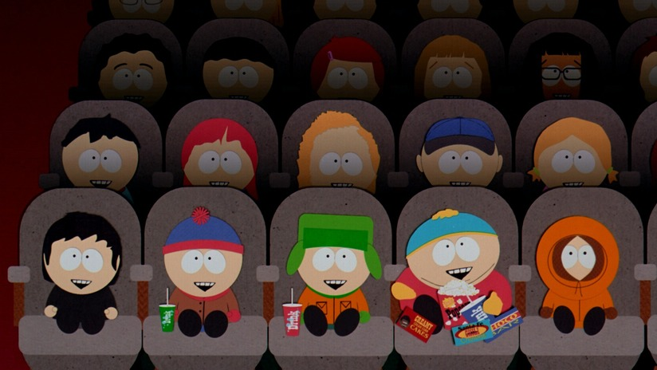

History of South Park series
The series' roots go as far back as 1992, when Trey Parker and Matt Stone were still at college. They created a short video called Jesus vs. Frosty. In 1995, Brian Graden, an executive of FOX, saw the film and commissioned Parker and Stone to make another. The next short video called "The Spirit of Christmas" resembled the animation style of the later series and the characters resembled their later selves. The video became increasingly popular and the creators went into talks with FOX. After this, they went to Comedy Central, who commissioned only 6 episodes for the first season, and it debuted on August 13, 1997. After the show proved itself to be a huge success, Comedy Central ordered 7 additional episodes, which Parker and Stone had to quickly produce.
The first season relied on shock-value, with rather weird and unusual plot lines such as the breeding of elephants and pigs and a giant mechanized version of Barbra Streisand. As the series progressed, the episodes tended to revolve mostly around the characters up until Season Seven. In this season there was a noticeable increase in satirical episodes, which remain the most popular to this day. However, in about Season Fifteen, there are mostly character-based episodes again. The series began to parody celebrities, such as Michael Jackson, Paris Hilton and Al Gore. It also parodied real life events such as homosexual marriages, global warming and use of the word 'nigger'. The creators also tend to parody (or pay homage to) television shows and films. The parodies also allow the creators to voice their opinions through episodes. The quick production on the show allows the program to respond quickly to current events, such as the capture of Saddam Hussein. The parodies of course, start controversies; in particular the episode "Trapped in the Closet" which mocked Scientology.
In September 2007, Parker and Stone signed a contract for three more seasons (after the current contract which runs up to the end of 2008 expires) which took the show up to 2011 with fifteen seasons and a total of 223 episodes at least.
In a news report on The New York Times website, a worker at Viacom stated that the show will continue to 2013.
The creators announced in the South Park website that South Park will continue up to it's 20th season in 2016.
The creators later announced that the series will be running until the twenty-third season.